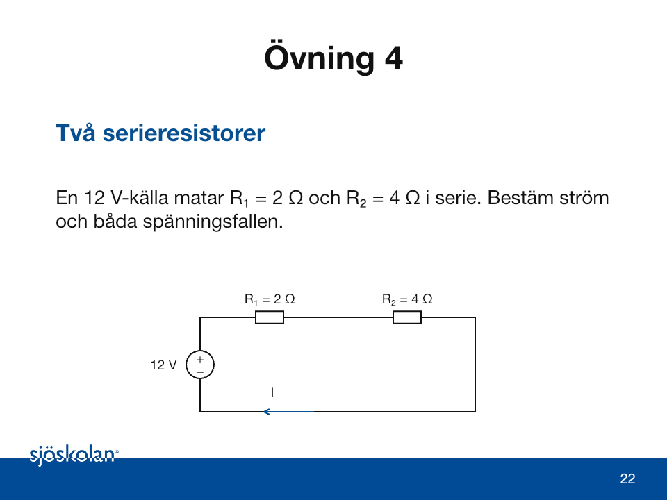
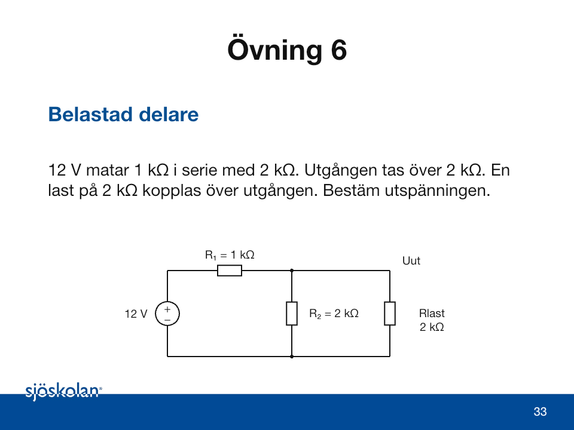
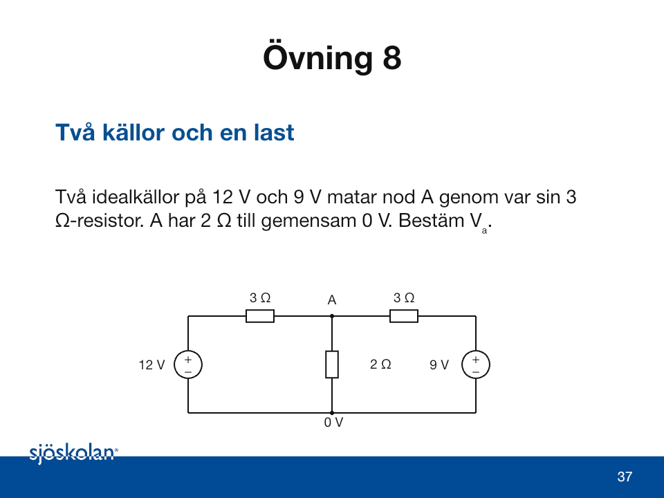

Formelstöd och övningar · vecka 39
Multimeter – aktuellt övningsmaterial
De illustrerade sjöfartsövningarna finns i Multimeter och mätfel · version 7. 70 bilder med stegvisa mätkopplingar, CAT-kategorier och mätfel. Här förklaras orden på enkel svenska.
För Kirchhoff är version 2 den aktuella presentationen. Formelbladet nedan är kompletterande stöd från grundpaketet; eventuella bildnummer avser grundpaketet.
Vecka 39 · måndag · 21 september 2026
Effekt och energi
Effekt, energi och laddning
Effekt P i W beskriver hur snabbt energi omvandlas.
Energi E i Wh eller kWh beskriver mängden över tid.
Laddning Q i Ah beskriver ström gånger tid.
Verkningsgrad η kopplar elektrisk inmatning till nyttig uteffekt.
Exempel: motor och energi
En motor ger 240 W vid η = 60 % i 30 min. Sök inmatad energi. Konstant drift antas.
Pᵢₙ = Pᵤₜ/η E = Pᵢₙt
1. η = 0,60 och t = 30/60 = 0,50 h.
2. Pᵢₙ = 240/0,60 = 400 W = 0,400 kW.
3. E = 0,400 · 0,50 = 0,200 kWh.
Kontroll: inmatningen är större än uteffekten. 200 Wh är energin under en halvtimme.
Exempel: kabelns spänningsfall
Två kopparledare à 8 m, A = 4 mm², I = 4 A, källa 24 V. ρ = 0,0175 Ω·mm²/m vid 20 °C.
R = ρ · ltotal/A ΔU = IR
1. ltotal = 2 · 8 = 16 m. R = 0,0175 · 16/4 = 0,070 Ω.
2. ΔU = 4 · 0,070 = 0,28 V. Ulast = 24 − 0,28 = 23,72 V.
3. Fall = 100 · 0,28/24 ≈ 1,17 %.
Kontroll: 23,72 + 0,28 = 24 V. Kontakter och temperaturökning är försummade.
Övningar med stöd
Skriv givna och sökta storheter, välj samband, visa insättningen och kontrollera enheten. I resonemangsuppgifter ska bedömningen kopplas till de uppgifter som finns i fallet.
Övning 1: Pumpens effekt
En DC-pump tar 3,0 A vid 24 V. Beräkna tillförd elektrisk effekt.
P = U · I
Symboler och innebörd: P är elektrisk effekt i W, U spänning i V och I ström i A.
Förutsättningar: Likström med konstant 24 V och 3,0 A. Tillförd effekt avser elen som pumpen tar emot.
Arbetsgång: Multiplicera spänning och ström. Kontrollera att enheten blir V · A = W.
Övning 2: Värmarens energi
En värmare på 1,5 kW går i 40 minuter. Beräkna energin i kWh.
E = P · t t[h] = t[min]/60
Symboler och innebörd: E är energi i kWh när P anges i kW och t i timmar.
Förutsättningar: Effekten 1,5 kW är konstant under alla 40 minuter.
Arbetsgång: Omvandla tiden till timmar först. Multiplicera sedan med effekten.
Övning 3: Tre laster
En 40 W-lampa går i 5 h och två 60 W-lampor går i 3 h. Beräkna total energi.
Etotal = E₁ + E₂ Egrupp = antal · P · t
Symboler och innebörd: Effekten per lampa anges i W. W · h ger Wh. 1 kWh = 1 000 Wh.
Förutsättningar: Alla lampor drar angiven effekt under respektive drifttid. Två 60 W-lampor räknas två gånger.
Arbetsgång: Beräkna varje grupps energi. Summera i Wh och dividera sedan med 1 000.
Övning 4: Motorns inmatning
En motor ger 600 W mekanisk effekt. Verkningsgraden är 75 %. Beräkna elektrisk inmatning och förlust.
Pᵢₙ = Pᵤₜ/η Pförlust = Pᵢₙ − Pᵤₜ
Symboler och innebörd: η är verkningsgrad som decimaltal. Pᵤₜ är mekanisk uteffekt och Pᵢₙ elektrisk inmatning.
Förutsättningar: η = 75 % = 0,75. Motorn arbetar konstant vid den angivna belastningen.
Arbetsgång: Dividera uteffekten med verkningsgraden. Subtrahera sedan uteffekten från inmatningen.
Övning 5: Ström genom en värmeresistor
En resistor på 12 Ω ansluts till 24 V DC. Beräkna ström och effekt.
I = U/R P = U · I = U²/R
Symboler och innebörd: R är resistans i Ω. Samma U och I ska avse samma resistor.
Förutsättningar: Ohmsk resistor med konstant R = 12 Ω. Källan håller 24 V över resistorn.
Arbetsgång: Beräkna I med Ohms lag. Använd därefter I för att beräkna effekten.
Övning 6: Kabelns resistans
Två kopparledare, vardera 10 m, har arean 2,5 mm². Använd ρ = 0,0175 Ω·mm²/m. Beräkna slingresistansen.
R = ρ · ltotal/A ltotal = 2 · lenkel
Symboler och innebörd: ρ är resistivitet i Ω·mm²/m, l längd i m och A ledararea i mm².
Förutsättningar: Koppar vid 20 °C: ρ = 0,0175 Ω·mm²/m. Två ledare à 10 m. Kontaktresistans försummas.
Arbetsgång: Summera fram- och återledarens längd. Sätt in total längd och arean 2,5 mm².
Övning 7: Spänning vid lasten
Källan ger 24 V. Kabelslingan har R = 0,140 Ω och lasten tar 5,0 A. Beräkna spänning vid lasten och procentuellt fall.
ΔU = I · R Ulast = Ukälla − ΔU
Fall i % = 100 · ΔU/Ukälla
Symboler och innebörd: ΔU är kabelslingans spänningsfall. Procenttalet jämför fallet med källans 24 V.
Förutsättningar: R = 0,140 Ω gäller hela slingan. Strömmen hålls vid 5,0 A.
Arbetsgång: Beräkna kabelns fall, dra det från källspänningen och beräkna andelen av 24 V.
Övning 8: Dubbel ström
En kabel har R = 0,20 Ω. Jämför kabelns värmeförlust vid 5 A och 10 A.
Pförlust = I²R P₂/P₁ = (I₂/I₁)²
Symboler och innebörd: I² betyder I · I. Förlusten är värmeeffekt i kabeln, i W.
Förutsättningar: Samma kabelresistans 0,20 Ω vid 5 A och 10 A. Temperaturändring försummas.
Arbetsgång: Räkna båda förlusterna och dividera den nya med den gamla.
Övning 9: Val av area i en modell
En 24 V-last tar 8 A. Enkel kabellängd är 12 m. Högst 0,8 V fall tillåts i uppgiften. Beräkna minsta area vid 20 °C.
Rmax = ΔUmax/I Amin = ρ · 2l/Rmax
Symboler och innebörd: l är enkel kabellängd i m. Amin anges i mm². ρ = 0,0175 Ω·mm²/m för koppar vid 20 °C.
Förutsättningar: Tvåledarkrets, l = 12 m, I = 8 A och högst 0,8 V fall. Kontakter och uppvärmning försummas.
Arbetsgång: Beräkna högsta slingresistans. Lös sedan ut arean. Övningen prövar bara spänningsfallskravet.
Övning 10: Energibehov för en pump
En 24 V-pump ger 120 W mekaniskt med η = 80 %. Den går i 2 h. Beräkna inmatad energi och laddningsbehov i Ah.
Pᵢₙ = Pᵤₜ/η E = Pᵢₙt
I = Pᵢₙ/U Q = I · t
Symboler och innebörd: E fås i Wh med W och h. Q är laddningsbehov i Ah med A och h. η anges som decimal.
Förutsättningar: Konstant 24 V och 120 W uteffekt under 2 h. η = 0,80. Ingen batterireserv ingår i modellen.
Arbetsgång: Räkna inmatning, energi och ström i tur och ordning. Beräkna sist Ah, som är en annan storhet än Wh.
Vecka 39 · tisdag · 22 september 2026
Kirchhoffs lagar
Spänning, ström och resistans
Spänning U i V är potentialskillnaden mellan två punkter.
Ström I i A är laddning per sekund i en gren.
Resistans R i Ω beskriver sambandet U = RI för en ohmsk resistor.
En slinga är en sluten rundtur. En nod är en gemensam elektrisk förbindelse.
Exempel: slingekvationen
18 V matar 3 Ω och 6 Ω i serie. Välj ström I från källans pluspol genom båda resistorerna.
18 − 3I − 6I = 0
1. Samla strömtermer: 18 − 9I = 0.
2. Addera 9I på båda sidor: 18 = 9I. Dividera med 9: I = 2 A.
3. U₁ = 3 · 2 = 6 V. U₂ = 6 · 2 = 12 V.
Kontroll: +18 − 6 − 12 = 0 V. Samma ström går genom båda resistorerna.
Exempel: en belastad delare
18 V matar R₁ = 2 kΩ och R₂ = 4 kΩ. Rlast = 4 kΩ ansluts parallellt med R₂.
Rp = R₂Rlast/(R₂ + Rlast)
Uut = Uin · Rp/(R₁ + Rp)
1. Rp = 4 · 4/(4 + 4) = 2 kΩ.
2. Uut = 18 · 2/(2 + 2) = 9 V.
3. Utan last: Uut = 18 · 4/(2 + 4) = 12 V.
Lasten sänker spänningen från 12 till 9 V. Totalströmmen är 18/4 = 4,5 mA.
Exempel: nodspänning stegvis
Två källor, 10 V och 4 V, matar A genom var sin 2 Ω-resistor. A har 1 Ω till gemensam 0 V.
(10 − Vₐ)/2 + (4 − Vₐ)/2 = Vₐ/1
1. Multiplicera varje term med 2: 10 − Vₐ + 4 − Vₐ = 2Vₐ.
2. Samla: 14 − 2Vₐ = 2Vₐ. Alltså 14 = 4Vₐ och Vₐ = 3,5 V.
3. I₁ = (10 − 3,5)/2 = 3,25 A. I₂ = (4 − 3,5)/2 = 0,25 A.
Kontroll: I₃ = 3,5/1 = 3,5 A och 3,25 + 0,25 = 3,5 A.
Exempel: Thévenin och last
18 V-delaren har R₁ = 2 kΩ och R₂ = 4 kΩ. Lastporten ligger över R₂. Lasten är 4 kΩ.
Uth = UinR₂/(R₁ + R₂)
Rth = R₁R₂/(R₁ + R₂)
1. Utan last: Uth = 18 · 4/6 = 12 V.
2. Nollställd källa i modellen: Rth = 2 · 4/6 = 4/3 kΩ.
3. Ilast = 12/(4/3 + 4) = 2,25 mA. Ulast = 2,25 · 4 = 9 V.
Kontroll: samma 9 V som direkt spänningsdelning. Källan nollställs bara i beräkningsschemat.
Övningar med stöd
Skriv givna och sökta storheter, välj samband, visa insättningen och kontrollera enheten. I resonemangsuppgifter ska bedömningen kopplas till de uppgifter som finns i fallet.
Övning 1: Nod med en okänd ström
8,0 A går in i en nod. 3,0 A och Iₓ går ut. Bestäm Iₓ med Kirchhoffs strömlag.
ΣIin = ΣIut Iₓ = Iin − Ikänd ut
Symboler och innebörd: Σ betyder summan av. I mäts i A. Pilarna avgör vilka strömmar som räknas in respektive ut.
Förutsättningar: Noden lagrar ingen nettoladdning i den stationära modellen. 8,0 A in, 3,0 A och Iₓ ut.
Arbetsgång: Skriv in = ut innan du flyttar något tal. Lös ut den okända strömmen och kontrollera balansen.
Övning 2: Negativt svar
2,0 A går in och 3,5 A går ut. Du ritar Iₓ ut ur noden. Beräkna och tolka Iₓ.
Iₓ = ΣIin − ΣIkänd ut
Symboler och innebörd: Ett positivt svar följer den valda pilen. Ett negativt svar betyder ström i motsatt riktning.
Förutsättningar: Behåll den ritade utgående pilen under beräkningen. In: 2,0 A. Känd ut: 3,5 A.
Arbetsgång: Beräkna det signerade värdet. Beskriv sedan både belopp och verklig riktning.
Övning 3: Spänningsfall i en slinga
En 24 V-källa matar tre serieresistorer. Två fall är 6 V och 10 V. Bestäm det tredje fallet Uₓ.
ΣΔU = 0 Uₓ = E − U₁ − U₂
Symboler och innebörd: E är källspänning i V. U₁, U₂ och Uₓ är positiva belopp för spänningsfall i strömriktningen.
Förutsättningar: En källa, tre serieresistorer och försumbart fall i ledningarna. E = 24 V, U₁ = 6 V, U₂ = 10 V.
Arbetsgång: Gå från källans minus till plus och sedan genom lasterna. Källhöjningen ska täcka alla fallen.
Övning 4: Två serieresistorer
En 12 V-källa matar R₁ = 2 Ω och R₂ = 4 Ω i serie. Bestäm ström och båda spänningsfallen.

E − R₁I − R₂I = 0
I = E/(R₁ + R₂) U₁ = R₁I, U₂ = R₂I
Symboler och innebörd: I mäts i A, E och U i V, R i Ω. I serie går samma ström genom båda resistorerna.
Förutsättningar: Ideal 12 V-källa, ohmska resistorer 2 Ω och 4 Ω. Ledningsresistansen försummas.
Arbetsgång: Samla I-termerna, dividera med total resistans och beräkna därefter respektive spänningsfall.
Övning 5: Parallellgrenar
12 V ligger över 6 Ω och 4 Ω parallellt. Bestäm grenströmmar och totalström.
I₁ = U/R₁ I₂ = U/R₂ I = I₁ + I₂
Symboler och innebörd: Parallella grenar har gemensam spänning U. Grenströmmarna kan vara olika.
Förutsättningar: U = 12 V över båda grenarna. R₁ = 6 Ω och R₂ = 4 Ω.
Arbetsgång: Beräkna varje gren med Ohms lag. Summera sedan med strömlagen.
Övning 6: Belastad delare
12 V matar 1 kΩ i serie med 2 kΩ. Utgången tas över 2 kΩ. En last på 2 kΩ kopplas över utgången. Bestäm utspänningen.

Rp = R₂Rlast/(R₂ + Rlast)
Uut = Uin · Rp/(R₁ + Rp)
Symboler och innebörd: Rp är ersättningsresistansen för de två parallella delarna. Alla R måste ha samma enhet.
Förutsättningar: Uin = 12 V, R₁ = 1 kΩ, R₂ = 2 kΩ, Rlast = 2 kΩ. Utgången tas över parallellgrenen.
Arbetsgång: Ersätt R₂ och lasten med Rp. Använd sedan spänningsdelaren med Rp som nedre resistor.
Övning 7: Strömdelare
6 A kommer till två parallellgrenar på 3 Ω och 6 Ω. Bestäm strömmen i varje gren.
I₁ = Itotal · R₂/(R₁ + R₂)
I₂ = Itotal − I₁
Symboler och innebörd: I₁ hör till R₁, men den andra resistorn R₂ står i täljaren. Lägre resistans ger större ström.
Förutsättningar: Två parallella ohmska grenar. Itotal = 6 A, R₁ = 3 Ω och R₂ = 6 Ω.
Arbetsgång: Beräkna första grenströmmen, sedan den andra. Kontrollera att I₁R₁ = I₂R₂.
Övning 8: Två källor och en last
Två idealkällor på 12 V och 9 V matar nod A genom var sin 3 Ω-resistor. A har 2 Ω till gemensam 0 V. Bestäm Vₐ.

(E₁ − Vₐ)/R₁ + (E₂ − Vₐ)/R₂ = Vₐ/R₃
Symboler och innebörd: Vₐ är nod A:s potential relativt 0 V. Varje kvot är en grenström enligt Ohms lag.
Förutsättningar: E₁ = 12 V, E₂ = 9 V, R₁ = R₂ = 3 Ω, R₃ = 2 Ω. Båda minuspolerna har gemensam 0 V.
Arbetsgång: Multiplicera hela ekvationen med 6 för att ta bort nämnarna. Samla Vₐ-termer och lös ut Vₐ.
Övning 9: Thévenin vid tomgång
12 V matar R₁ = 1 kΩ i serie med R₂ = 2 kΩ. Lastporten ligger över R₂. Bestäm Uth och Rth utan ansluten last.
Uth = Uin · R₂/(R₁ + R₂)
Rth = R₁R₂/(R₁ + R₂)
Symboler och innebörd: Uth är spänning över den öppna lastporten. Rth är resistans sedd in i porten med källan nollställd.
Förutsättningar: Linjärt DC-nät med ideal oberoende 12 V-källa. R₁ = 1 kΩ, R₂ = 2 kΩ. Lasten borttagen.
Arbetsgång: Beräkna tomgångsspänningen. Ersätt sedan idealkällan med en ledning enbart i beräkningsschemat.
Övning 10: Last på Théveninkällan
Använd Uth = 8 V och Rth = 2/3 kΩ. Anslut Rlast = 2 kΩ. Beräkna lastström och lastspänning.
Ilast = Uth/(Rth + Rlast)
Ulast = Ilast · Rlast
Symboler och innebörd: V/kΩ ger mA. mA · kΩ ger V. Använd samma resistansenhet i hela nämnaren.
Förutsättningar: Uth = 8 V, Rth = 2/3 kΩ och Rlast = 2 kΩ. Använd 2/3 utan tidig avrundning.
Arbetsgång: Beräkna lastströmmen ur serieresistansen. Beräkna sedan spänningen över lasten.